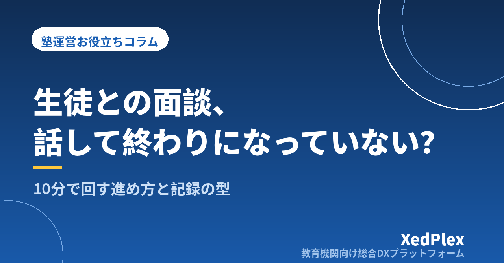

塾の生徒面談のやり方｜頻度・時間・聞くことを決めて「話して終わり」にしない記録と保護者共有の型

授業の前後に生徒と少し話すことはあっても、腰を据えて1対1で話す時間はなかなか取れない。気になる生徒がいても「今度ゆっくり話そう」と思っているうちに定期テストが来て、気づけば保護者から「最近、塾のことを話さなくなって」と相談される──。生徒の様子を一番よく見ているはずの塾長ほど、こうした経験があるのではないでしょうか。
保護者との面談は年間の予定に入っていても、生徒本人との面談は「時間があればやるもの」になりがちです。けれども、成績や態度の変化の理由は、生徒本人に聞かないと分からないことがほとんどです。
この記事では、忙しい個人塾でも続けられるように、生徒面談を「頻度・時間・聞くこと・記録」の4点で型にする方法を整理します。保護者面談の回数や時期については保護者面談は年何回・いつ行う？で扱っているので、あわせてご覧ください。
生徒面談は「何のためにやるか」を先に決める
生徒面談が続かない理由のひとつは、目的があいまいなまま始めてしまうことです。「とりあえず話を聞く」だと、話が雑談で終わったり、逆に説教の場になったりします。個人塾の生徒面談の目的は、おおむね次の3つに整理できます。
| 目的 | 具体的に知りたいこと | 面談後に変えること |
|---|---|---|
| ① 学習の確認 | 家庭学習の量、つまずいている単元、テストの手応え | 宿題の量や指導の順番、学習計画 |
| ② 目標の共有 | 次のテストや受験で目指したいこと、志望校の気持ち | 目標に合わせた計画、保護者面談で話す内容 |
| ③ 状態の把握 | 学校・部活・友人関係・体調など、勉強以外の変化 | 声かけの仕方、必要なら保護者への相談 |
毎回すべてを深く聞く必要はありません。時期によって重点を変えるのが現実的です。たとえば定期テスト前は①、学年の切り替わりや受験学年の秋は②、長期休み明けや様子の変化に気づいたときは③を中心にします。
頻度と時間は「全員・短く・定期的に」
生徒面談でよくある失敗は、気になる生徒だけを呼び出すことです。呼ばれた生徒は「何か悪いことをしたのでは」と構えてしまい、本音を話しにくくなります。全員を対象にして、短い時間で定期的に回すほうが、結果的に話を聞きやすくなります。
目安の頻度
| 対象 | 頻度の目安 | タイミングの例 |
|---|---|---|
| 小学生 | 学期に1回程度 | 長期休み前後。保護者面談の前 |
| 中1・中2 | 定期テストごと | テスト2〜3週間前（目標と計画）、返却後（振り返り） |
| 中3・高3などの受験生 | 月1回程度 | 模試の返却後、志望校を考える時期、出願前 |
| 様子が気になる生徒 | 随時（短く） | 遅刻・欠席が続く、表情が変わったと感じたとき |
あくまで目安なので、塾の規模や授業形態に合わせて調整してください。大切なのは「いつやるか」を年間の予定に先に入れておくことです。思い立ったときにやる方式では、忙しい時期ほど後回しになります。年間の予定の組み方は塾の年間事務カレンダーの作り方で紹介しています。
1回10分を基本にする
生徒面談は、1人10分程度で十分です。授業の前後や、自習に来ている時間の一部を使えば、授業時間を削らずに回せます。生徒数が多い塾なら、「今週は中2の◯組」のように数週間かけて一巡させる形にすると、1日の負担は数人分で済みます。
面談の予定を生徒にも事前に伝えておきましょう。「来週の火曜、授業のあとに10分だけ話そう。次のテストの目標を考えておいてね」と一言添えるだけで、当日の話がぐっと具体的になります。
10分で終わる面談の進め方と質問例
短い時間で中身のある面談にするには、毎回同じ流れで進めるのがおすすめです。流れが決まっていると、塾長も迷わず、生徒も話しやすくなります。
| 時間 | やること | 質問・声かけの例 |
|---|---|---|
| 最初の2分 | 近況を聞く（話しやすい話題から） | 「最近、学校はどう？」「部活は忙しい時期？」 |
| 次の4分 | 学習の振り返り | 「前回決めた目標、どこまでできた？」「一番手ごたえがあった科目は？」「どこで手が止まった？」 |
| 次の3分 | 次の目標と行動を決める | 「次のテストまでに、何を1つ変えてみる？」「塾でやってほしいことはある？」 |
| 最後の1分 | 決めたことを確認して終える | 「じゃあ、◯◯を毎週◯回、で決まりね。次は◯月に話そう」 |
聞き方で気をつけたいこと
- 「はい／いいえ」で終わる質問を減らす：「勉強してる？」より「先週、家で一番時間を使った科目は？」のほうが、具体的な答えが返ってきます。
- 反省会にしない：できなかったことを責めるより、「何があればできそうか」を一緒に考えるほうが、次の行動につながります。
- 決めることは1〜2個に絞る：あれもこれも約束すると、どれも続きません。生徒が自分の言葉で言えるくらいの小ささにします。
- 話したくないことは無理に聞かない：勉強以外の悩みが見えたときは、「話したくなったらいつでも言ってね」と伝えて終えるのも一つの対応です。家庭や学校に関わる深刻な内容が出てきたときは、一人で抱え込まず、保護者への伝え方や必要に応じた専門機関への相談を慎重に検討しましょう。
面談で決めた目標は、学習計画に落とし込んで初めて意味を持ちます。週単位の計画と振り返りの回し方は生徒別の学習計画の立て方と続ける仕組み、やる気を保つ工夫は生徒のやる気を維持する仕組みを参考にしてください。
面談シートで記録を残し、次につなげる
生徒面談で一番もったいないのは、話した内容が塾長の頭の中にしか残らないことです。次の面談で前回の約束を確認できず、講師に引き継ぐこともできません。面談の記録は、次の項目に絞った「面談シート」で残します。
| 項目 | 記入例 |
|---|---|
| 日付・面談者 | 11/16 塾長 |
| 前回決めたこと／結果 | 英単語を毎日10個 → 平日はほぼ続いた、土日は抜けた |
| 本人の話（要点） | 数学の関数が分からない。部活の大会が来月まである |
| 塾長の気づき | 疲れている様子。宿題の量は今のままでは厳しそう |
| 次に決めたこと | 関数の基本問題を授業で先に扱う。宿題は大会まで量を調整 |
| 保護者に共有すること | 大会期間中の宿題の調整について一言伝える |
| 次回の予定 | 12月上旬（テスト返却後） |
書く時間は数分で十分です。完璧な文章でなくても、「前回決めたこと」と「次に決めたこと」さえ残っていれば、次の面談は前回の続きから始められます。授業ごとの記録の残し方は生徒の記録（日誌）を残す習慣と活かし方で詳しく紹介しています。
面談の記録が日々の授業記録と同じ場所にあれば、講師が担当を替わったときにも、生徒が何を目標にしているかがすぐに分かります。講師間の情報共有については講師間で生徒情報を引き継ぐ仕組みをご覧ください。
生徒面談の内容を保護者とどう共有するか
生徒面談の内容は、すべてを保護者に伝える必要はありません。むしろ、話したことがそのまま家庭に伝わると分かると、生徒は本音を話さなくなります。共有の範囲は、あらかじめ次のように分けておくと迷いません。
| 区分 | 例 | 伝え方 |
|---|---|---|
| 伝える | 決めた目標、学習計画の変更、宿題量の調整 | 指導報告やお知らせで簡潔に |
| 本人に確認してから伝える | 志望校についての本音、苦手意識、部活との両立の悩み | 「この話、お家の人にも伝えていい？」と聞いてから |
| すぐに相談する | 安全や健康に関わること、いじめなどが疑われること | 電話や面談で直接。対応は慎重に |
生徒面談の内容は、保護者面談の準備にもそのまま使えます。「本人はこの目標を立てていて、こういう工夫をしています」と、生徒の言葉をもとに話せると、保護者にとっても納得感のある面談になります。保護者面談の資料づくりは保護者面談の準備を1時間で終わらせる方法、日々の報告の書き方は保護者に伝わる指導報告書の書き方で紹介しています。
また、生徒面談を定期的に行っていると、「最近元気がない」「目標の話をしたがらない」といった小さな変化に早く気づけます。退塾の申し出が突然に感じられるのは、こうした変化を拾う場がないことも一因です。保護者との接点づくりと合わせて、退塾を防ぐ保護者コミュニケーションの仕組みも参考にしてください。
まとめ
生徒面談は、特別なイベントではなく、短く定期的に回す「仕組み」にすることで続けられるようになります。
- 目的を「学習の確認・目標の共有・状態の把握」に分け、時期によって重点を変える
- 気になる生徒だけでなく全員を対象に、1回10分・定期的に行う
- 近況→振り返り→次の行動→確認、の同じ流れで進める
- 面談シートに「前回決めたこと」と「次に決めたこと」を必ず残す
- 保護者に伝える範囲を先に決め、本音を聞ける関係を守る
まずは次の定期テストに向けて、1学年だけでも10分面談を一巡させてみてください。生徒が何を考えているかが見えてくると、授業での声かけも、保護者への説明も変わってくるはずです。
この記事を書いた運営より
私たちは、個人経営・小規模の学習塾向けに、生徒管理・QRコードでの入退室記録・月次請求・保護者へのLINE/メール通知・AIによる学習支援までをひとつにまとめた教育機関向け総合DXプラットフォーム「XedPlex（ゼドプレックス）」を開発・提供しています。初期費用は0円、料金は生徒1名あたり月額300円（税込）から。生徒50名の塾なら月15,000円（税込）です。全国8つの教室で導入されており、導入塾には紹介ホームページの無料作成も行っています。面談予定の管理や、デイリーノート・指導報告書による生徒ごとの記録にも対応しています。機能の詳細説明はこちら。
XedPlexの詳細を見る